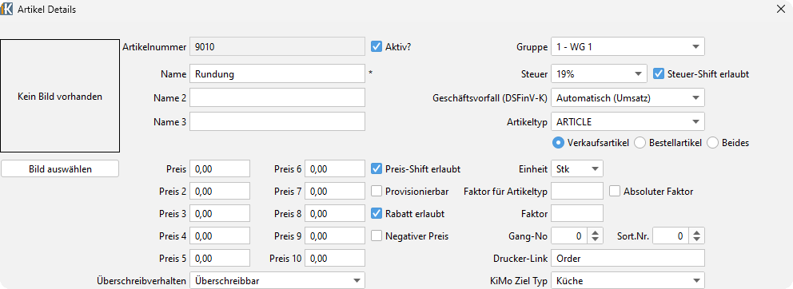
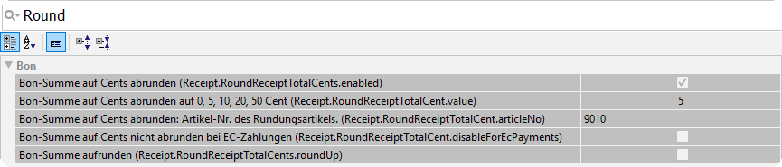
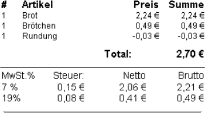

Automatisches Runden von Bonsummen
Die ITR Kasse kann die Bonsumme auf volle 5, 10, 20 oder 50 Cent oder auf ganze Euro runden, etwa wenn ein Geldautomat ohne 1- und 2-Cent-Münzen arbeitet. Beim Wechsel in die Bezahlmaske bucht die Kasse dazu einen Rundungsartikel mit dem Differenzbetrag auf den Bon.
Voraussetzungen
- Zugriff auf die Artikelstammdaten im CentralPoint bzw. an der Standalone-Kasse
- Zugriff auf die Admin-Seiten der Kasse
So gehen Sie vor
Rundungsartikel anlegen
- Legen Sie im CentralPoint unter Kassendaten → Artikel einen neuen Artikel an, z. B. Rundung mit der Artikelnummer
9010. An einer Standalone-Kasse legen Sie ihn unter Admin-Seiten → Stammdaten → Artikel an, der Dialog ist derselbe. - Setzen Sie den Preis auf
0,00. - Stellen Sie Überschreibverhalten auf Überschreibbar.
- Setzen Sie den Haken Steuer-Shift erlaubt. Negativer Preis bleibt aus, auch beim Abrunden.
- Sie können den Artikel in eine eigene Warengruppe legen, damit die Rundungsbeträge in den Auswertungen getrennt erscheinen.
- Speichern Sie den Artikel und übertragen Sie die Stammdaten an die Kassen.

Rundung an der Kasse einschalten
- Öffnen Sie an der Kasse Admin-Seiten → Einstellungen → Sonstiges → Alle Einstellungen.
- Klicken Sie auf Bearbeiten starten und geben Sie im Suchfeld
Roundein. - Setzen Sie die Parameter wie in der Tabelle unten.
- Klicken Sie auf Bearbeiten beenden.
- Starten Sie die Kasse neu (Service → Neustart).
| Name | Beschreibung | Standardwert | Beispiel |
|---|---|---|---|
Receipt.RoundReceiptTotalCents.enabled | Schaltet die Rundung ein | false | true |
Receipt.RoundReceiptTotalCent.value | Rundungsschritt in Cent: 5, 10, 20, 50 oder 100 (ganze Euro) | 5 | 5 |
Receipt.RoundReceiptTotalCent.articleNo | Artikelnummer des Rundungsartikels | – | 9010 |
Receipt.RoundReceiptTotalCents.roundUp | Rundet auf statt ab | false | false |
Receipt.RoundReceiptTotalCent.disableForEcPayments | Entfernt den Rundungsartikel, sobald eine EC-Zahlung gestartet wird | false | true |

Beim Aufrunden (roundUp = true) erhöht die Kasse auch Bonsummen, die bereits durch den Rundungsschritt teilbar sind, um einen vollen Schritt: 2,10 € wird zu 2,15 €, 3,10 € zu 3,15 €. Beim Abrunden bleiben solche Summen unverändert.
Verhalten an der Kasse
| Situation | Verhalten |
|---|---|
| Bezahlen gedrückt | Die Kasse bucht den Rundungsartikel mit dem Differenzbetrag als eigene Position auf den Bon. |
| Bezahlmaske wird ohne Zahlung verlassen | Der Rundungsartikel wird wieder entfernt. |
| Rabatt auf dem Bon | Gerundet wird die Summe nach Rabatt. |
| Steuersatz | Die Rundungsposition erhält den niedrigsten Steuersatz, der auf dem Bon vorkommt. |
| Bonsumme | Abrunden, Schritt 5 | Aufrunden, Schritt 5 |
|---|---|---|
| 2,73 € | Rundung −0,03 € → 2,70 € | Rundung +0,02 € → 2,75 € |
| 5,34 € (nach 5 % Rabatt) | Rundung −0,04 € → 5,30 € | – |
| 2,10 € bzw. 5,10 € | keine Rundung | Rundung +0,05 € → 2,15 € |
Ergebnis prüfen
- Bonieren Sie Artikel mit einer Summe, die nicht durch den Rundungsschritt teilbar ist, z. B. 2,73 €.
- Drücken Sie Bezahlen: Auf dem Bon steht die Position Rundung, das Total ist gerundet.

Wenn es nicht funktioniert
- Keine Rundungsposition: Prüfen Sie, ob die Artikelnummer in
Receipt.RoundReceiptTotalCent.articleNoan der Kasse vorhanden ist. - Geänderte Einstellung wirkt nicht: Starten Sie die Kasse neu.
Weitere Informationen
- ITR Partner Service → Produkte → ITR Kasse → Einstellungen der Kasse: Referenz
- ITR Partner Service → Produkte → CentralPoint → Stammdaten pflegen und verteilen